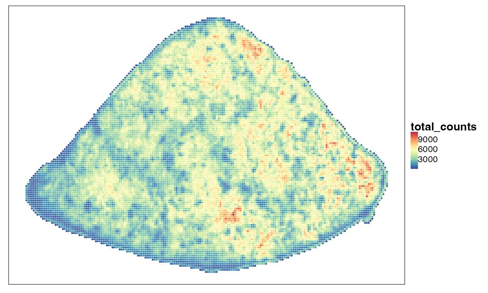
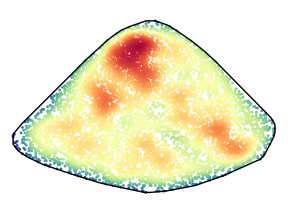
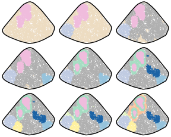
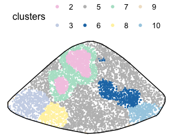
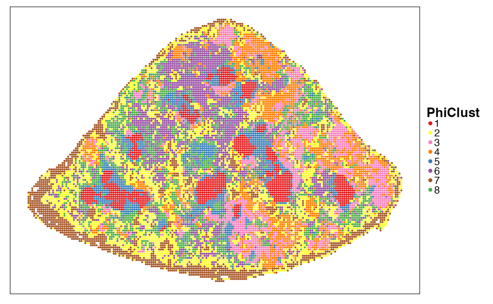
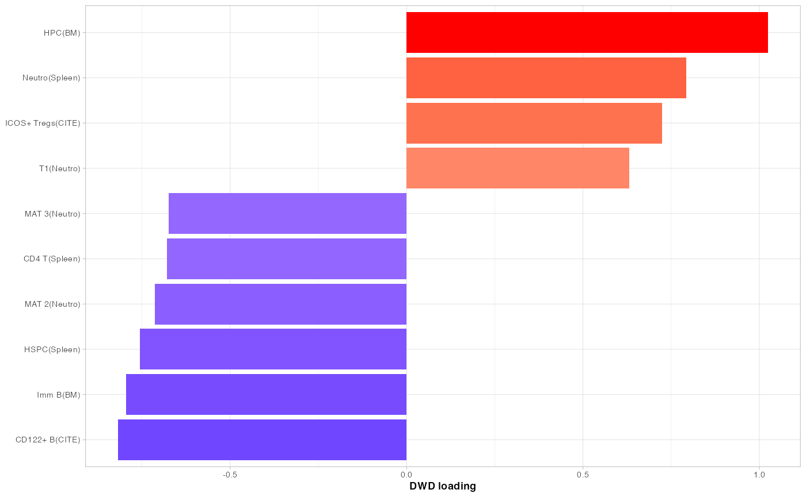

StereoSeq.RmdAnnotation using multiple references;
Annotation of spatial bins (without cell segmentation);
Identify cell states of a large number of cancer clones.
In this case study, we will apply PhiSpace to identify clone-specific cell states in an acute myeloid leukaemia (AML) mouse model.
In addition, we also make use of a ‘bridge’ dataset as an intermediate between the four reference datasets and the Stereo-seq query:
For this case study, utility functions and processed data can all be found in this folder.
# Name of the game
suppressPackageStartupMessages(library(PhiSpace))
# Tidyverse packages
suppressPackageStartupMessages(library(ggplot2))
suppressPackageStartupMessages(library(dplyr))
suppressPackageStartupMessages(library(magrittr))
suppressPackageStartupMessages(library(ggpubr))
suppressPackageStartupMessages(library(tidyr))
# Other utils
suppressPackageStartupMessages(library(qs)) # Fast read and write of large R objects
dat_dir <- "~/Dropbox/Research_projects/PhiSpace/VignetteData/StereoSeq/" # replace this by your own directory
source(paste0(dat_dir, "StereoSeq_utils.R"))Following Holze et al. (2024), we binned the tissue domain into so-called ‘bin50’ size, resulting in transcript bins with side lengths ~25μm. These bins are larger than typical single cells and hence each bin may contain more than one cell. These bins will be our cell-like objects.
Note on cell segmentation. For subcellular spatial RNA-seq, reliable cell segmentation is not always possible. This is because reliable cell segmentation relies on cell staining such as DAPI and advanced imaging machine learning algorithms (can be time-consuming). And the quality of cell segmentation varies from tissue to tissue, with some tissues such as spleen intrisically difficult to segment due to its complex morphological structures and croweded, overlapping immune cells. If additional cell staining is not included in experimental design (i.e. you unfortunately did pay for it), then cell segmentation cannot be very accurate. In this Stereo-seq case, cell segmentation was not possible due to a phenomenon called ‘swapping’ or ‘bleeding’, i.e. transcripts bleeding among neighbouring measurement units causing contamination. This phenomenon is actually fairly common (no data is perfect!).
queryPath <- paste0(dat_dir, "data/mouse4_bin50_bc_sce.qs")
if(F){ # The data has already been normalised, but if you want to try again, change F to T
query <- qread(queryPath)
query <- RankTransf(query, "counts") # Rank transform
query <- logTransf(query, targetAssay = "log1p", use_log1p = TRUE)
qsave(query, queryPath)
} else {
query <- qread(queryPath)
}Visualise total RNA counts. delete bins with too few transcripts.
VizSpatial(query, ptSize = 1, groupBy = "total_counts")
SPLINTR
Clonal evolution of cancer.
# Load barcode-seq
bcRaw <- read.table(
paste0(dat_dir, "data/mouse4_bin50_bc_counts.tsv"),
sep = "\t", header = T, row.names = 1
)
# Match spatial coordinates with sce object
bcRaw$bin_y <- -bcRaw$bin_y
bcRaw$y_center <- -bcRaw$y_center
isin_data <- (bcRaw$isin_adata == "True")
# Simplify barcode names
bcRaw$barcode <- gsub("GFP_", "", bcRaw$barcode)
# Bins that do not contain barcodes
noBarIdx <- setdiff(query$cell_id, bcRaw$cell_id[bcRaw$isin_adata == "True"])We visualise the spatial distributions of some of the dominating clones. This helps us see if a clone tends to concentrate within a spatial region, and if different clones tend to concentrate in different regions.
For this purpose we first define some useful quantities for plotting.
# Which coordinates to use
xCoordName <- "x_center"
yCoordName <- "y_center"
# X and Y limits
xylimits <- bcRaw[isin_data, c(xCoordName, yCoordName)] %>% apply(2, quantile, probs = c(0,1))
## Convex hull defining spleen region
ch <- colData(query)[, c("x", "y")] %>% as.matrix()
ch <- ch[chull(ch),]
sortedBC <- table(bcRaw$barcode) %>% sort(decreasing = T)Density of barcoded bins.
xx_eval <- colData(query)[query$barcode != "nan", c("x", "y")]
xx <- colData(query)[query$barcode != "nan", c("x", "y")]
suppressWarnings(kde_res <- tempDenPlot(xx, xx_eval, xylimits, ch, F, psize = 1, "", spleenOnly = F))
estValues <- kde_res$kde_res$estimate
estRange <- range(estValues)
kde_res$p + scale_colour_gradientn(colours = PhiSpace:::MATLAB_cols, limits = estRange) 
Plot the top 16 most abundant clones. KDE. Need to install
ks package for kern smoothing.
sortedBC <- table(bcRaw$barcode) %>% sort(decreasing = T)
xx_eval <- bcRaw[, c(xCoordName, yCoordName)] %>% `colnames<-`(c("x", "y"))
kdePath <- paste0(dat_dir, "output/cloneKDEres.qs")
if(!file.exists(kdePath)){
out <- lapply(
1:16,
function(x){
# Which clone
bcName <- names(sortedBC)[x]
# Data for density est
xx <- bcRaw[bcRaw$barcode == bcName, c(xCoordName, yCoordName)]
suppressWarnings(kde_res <- tempDenPlot(xx, xx_eval, xylimits, ch, F, psize = 0.3, bcName, spleenOnly = T))
return(kde_res)
}
)
qsave(out, kdePath)
} else {
out <- qread(kdePath)
}
estValues <- lapply(out, function(x) x$kde_res$estimate) %>% unlist
estRange <- range(estValues)
outPlots <- lapply(
out,
function(x){
p <- x$p
suppressMessages(
p <- p + scale_colour_gradientn(colours = PhiSpace:::MATLAB_cols, limits = estRange)
)
}
)
ggarrange(plotlist = outPlots, nrow = 4, ncol = 4, legend = "none")To evaluate the spatial distribution of all the clones, instead of viewing them one by one, we aggregate the high abundance clones to make a ‘barcode-seq’ assay.
We first filter out low abundance barcodes. The idea is that, most barcodes have very low abundance (eg detected in only one bin) and it’s not very interesting analysing them. (However there is a possibility to utilise them for statitical inference. That is, we might be able to model the spatial distribution of those low abundance barcodes as a proxy to some sort of background noise.)
sortedBC_filt <- sortedBC[sortedBC >= 50]
length(sortedBC_filt)## [1] 35
bcFilt <- bcRaw %>% filter(barcode %in% names(sortedBC_filt)) %>%
mutate(barcode = as.factor(barcode))We only kept those ones as the features in our barcode-seq assay,
which describes the abundance of the 35 selected barcodes in the close
proximity of each bin. More specifically, for a given bin, we count the
barcodes present in the surronding bins whose distances to that given
bin is no larger than xyRange. We tentatively selected
xyRange <- 50 but the influence of this parameter on
downstream results should be benchmarked in the future. Now this
barcode-seq assay has a similar interpretation as microbiome data, where
counts of different taxa of bacteria are identified. Here the barcodes
are our taxa.
xyRange <- 500
binIDs <- unique(bcFilt$cell_id)
barAssay <- sapply(
1:length(binIDs),
function(x){
binID <- binIDs[x]
coords <- bcFilt %>% filter(cell_id == binID)
coords <- coords[1, c("x_center", "y_center")]
xcond <- (abs(bcFilt$x_center - coords[1,1]) < xyRange)
ycond <- (abs(bcFilt$y_center - coords[1,2]) < xyRange)
idx <- xcond & ycond
table(bcFilt[idx,"barcode"])
}
) %>% t() %>% `rownames<-`(binIDs)Next we cluster the bins using the barcode-seq assay. Bins belonging to the same cluster tend to have similar composition of barcodes. We try different choices of number of clusters.
plot_dat <- unique(bcFilt[,c("cell_id", xCoordName, yCoordName)]) %>% as.data.frame()
clustPath <- paste0(dat_dir,"output/barcode-seq_clustering.qs")
if(!file.exists(clustPath)){
set.seed(523423)
outClusts <- lapply(
2:10,
function(kclust){
clust_res <- kmeans(barAssay, centers = kclust, iter.max = 100, nstart = 50)
return(clust_res)
}
)
qsave(outClusts, clustPath)
} else {
outClusts <- qread(clustPath)
}Plot the clusters. To make the clusters comparable across different
run of clustering, we align the clusters using the Hungarian algorithm
implemented by clue::solve_LSAP.
Say more about PhiSpace::align_clusters.
clust_list <- lapply(
outClusts,
function(x) factor(x$cluster, levels = sort(unique(x$cluster)))
)
# Align clusters across different results
outPlots <- vector("list", length(clust_list))
for(x in length(clust_list):1){
clust <- clust_list[[x]]
if(x < length(clust_list)){
clust_old <- clust_list[[x+1]]
clust <- align_clusters(clust, clust_old) %>% as.factor()
clust_list[[x]] <- factor(clust, levels = as.character(sort(as.numeric(levels(clust)))))
}
plot_dat <- plot_dat %>% mutate(clusters = clust_list[[x]])
outPlots[[x]] <- tempClustPlot(plot_dat, T, pSize = 0.3)
}
suppressWarnings(ggarrange(plotlist = outPlots, nrow = 3, ncol = 3, legend = "none"))
To interpret the clusters, we look at clone composition of each cluster. We look at the non-aggregated counts (ie barcode counts in each individual bin).
binIDs <- unique(bcFilt$cell_id)
barAssayRaw <- sapply(
1:length(binIDs),
function(x){
binID <- binIDs[x]
idx <- (bcFilt$cell_id == binID)
table(bcFilt[idx,"barcode"])
}
) %>% t() %>% `rownames<-`(binIDs)
clustIdx <- 7
clust <- clust_list[[clustIdx]]
barSelected <- names(sortedBC)[1:5]
plot_dat_wide <- barAssayRaw[,barSelected] %>% as.data.frame() %>%
mutate(clust = clust) %>% group_by(clust) %>%
summarise(across(starts_with("Barcode"), sum))
plot_prop <- plot_dat_wide %>% select(!clust) %>% as.matrix()
plot_prop <- (plot_prop/rowSums(plot_prop)) %>% as.data.frame() %>%
mutate(clust = plot_dat_wide$clust) %>%
pivot_longer(!clust, values_to = "count", names_to = "barcode") %>%
mutate(barcode = factor(barcode, levels = rev(barSelected)))
plot_prop <- plot_prop %>% filter(clust != "9")
plot_prop %>% ggplot(aes(count, barcode)) +
geom_bar(aes(fill = clust), stat = "identity") + theme_bw(base_size = 12) +
scale_fill_manual(values = clust_cols) + facet_wrap(~ clust, nrow = 2) +
theme(
legend.position = "none", axis.title = element_blank(),
strip.text.x = element_text(size = 12, face = "bold")
)
tempClustPlot(plot_dat %>% mutate(clusters = clust_list[[clustIdx]]), T, pSize = 1) +
theme_void(base_size = 12) + theme(legend.position = "top")
I also tried different choices of xyRange, but results were
not too sensitive to the choice.
We use a bridging strategy to annotate the query Stereo-seq data. First using the four scRNA-seq references to annotate the AML spleen scRNA-seq data from Fennel et al. (2022) and then use this intermediate scRNA-seq data to annotate the query Stereo-seq data. Note that the intermediate scRNA-seq and the Stereo-seq data were from the same mouse spleen.
See runPhiSpace.R for the annotation of the intermediate
scRNA-seq dataset.
PhiSpace annotation of the query Stereo-seq.
PhiResPath <- paste0(dat_dir, "output/PhiRes.qs")
if(!file.exists(PhiResPath)){
querySC <- qread(paste0(dat_dir, "data/mouse4_scRNAseq_sce.qs"))
pathPhiSc <- paste0(dat_dir, "output/Mouse4_scRNA-seq_PhiSc_list.rds")
impScPath <- paste0(dat_dir, "output/ImpScores_for_Mouse4_scRNA-seq.rds")
scPhiSc_list <- readRDS(pathPhiSc)
reducedDim(querySC, "PhiSpace") <- do.call("cbind", scPhiSc_list)
newNames <- c(
"RBC", "CD8 T", "Plasma", "Mature B", "cDC",
"NK", "Neutro", "CD4 T", "Cr2 B", "HSPC",
"Trans B", "Mono", "T", "Pre-B cycl", "Endo",
"Cd7+ NK", "Macro", "pDC", "Baso", "Pre-B",
"Mono", "Naive B", "Granulo", "Macro", "Imm B",
"HPC", "Late pro-B", "Imm NK", "ProEryThBla", "T",
"ErythBla", "T3", "MAT 3", "MAT 2", "IMM 1",
"MAT 4", "MAT 1", "IMM 2", "T1", "T2",
"PreNeu", "MAT 5", "MZ B", "Trans B", "Mat B",
"CD122+ B", "Ifit3+CD4 T", "CD4 T", "pDC", "CD8 T",
"B1 B", "NKT", "Ifit3+ B", "NK", "GD T",
"ICOS+ Tregs", "Tregs", "Ly6+ mono", "Neutro", "Cycl B/T",
"cDC2", "Ly6- mono", "RedPulp macro", "RBC", "Mig DC",
"Ifit3+CD8 T", "cDC1", "Act CD4 T", "Plasma", "MZ/Marco+ macro"
)
newNames <- paste0(
newNames,
rep(c("(Spleen)", "(BM)", "(Neutro)", "(CITE)"), sapply(scPhiSc_list, ncol))
)
colnames(reducedDim(querySC, "PhiSpace")) <- newNames
querySC <- logTransf(querySC, targetAssay = "log1p", use_log1p = T)
PhiRes <- PhiSpaceR_1ref(
querySC, query, response = reducedDim(querySC, "PhiSpace"),
PhiSpaceAssay = "log1p", nfeat = 500, regMethod = "PLS", scale = FALSE
)
qsave(PhiRes, PhiResPath)
} else {
PhiRes <- qread(PhiResPath)
}
reducedDim(query, "PhiSpace") <- normPhiScores(PhiRes$PhiSpaceScore)[colnames(query),]Some cell types.
Clustering based on PhiSpace scores.
tempClustCols <- c(
"1" = "#E41A1C", "2" = "#FFFF33", "3" = "#F781BF", "4" = "#FF7F00",
"5" = "#377EB8", "6" = "#984EA3", "7" = "#A65628", "8" = "#4DAF4A"
)
pathPhiClustRes <- paste0(dat_dir, "output/PhiClustRes.qs")
if(!file.exists(pathPhiClustRes)){
PhiPCRes <- getPC(reducedDim(query, "PhiSpace"), ncomp = ncol(reducedDim(query, "PhiSpace")) - 1)
PhiPCRes$accuProps
plot(1-PhiPCRes$accuProps)
mat2clust <- PhiPCRes$scores[,1:30]
names(tempClustCols) <- 1:8
set.seed(94863)
clust_res <- kmeans(mat2clust, centers = 8, iter.max = 200L, nstart = 50)
qsave(clust_res, pathPhiClustRes)
} else {
clust_res <- qread(pathPhiClustRes)
}
query$PhiClust <- as.character(clust_res$cluster)
VizSpatial(query, groupBy = "PhiClust", ptSize = 1, legend.symb.size = 2) +
scale_colour_manual(values = tempClustCols) +
theme(legend.title = element_text(face = "bold"), legend.key.spacing = unit(0, "pt"))
Clustering based on PCs of gene expression.
pathGexClustRes <- paste0(dat_dir, "output/GexClustRes.qs")
if(!file.exists(pathGexClustRes)){
mat2clust <- getPC(t(assay(query, "log1p")), ncomp = 30)$scores
set.seed(94858)
clust_res <- kmeans(mat2clust, centers = 8, iter.max = 200L, nstart = 50)
qsave(clust_res, pathGexClustRes)
} else {
clust_res <- qread(pathGexClustRes)
}
query$GenClust <- align_clusters(as.character(clust_res$cluster), query$PhiClust)
VizSpatial(query, groupBy = "GenClust", ptSize = 1) +
scale_colour_manual(values = tempClustCols) +
guides(colour = guide_legend(override.aes = list(size = 2))) +
theme(
legend.title = element_text(face = "bold"),
legend.position = "right", legend.key.spacing = unit(0, "pt")
)DWD analysis: barcoded vs nonbarcoded.
library(kerndwd)
barcodeVec <- as.character(query$barcode)
barcodeVec[barcodeVec != "nan"] <- 1
barcodeVec[barcodeVec == "nan"] <- -1
barcodeVec <- as.numeric(barcodeVec)
X_cent <- reducedDim(query, "PhiSpace") %>% as.matrix()
X_cent <- scale(X_cent, center = T, scale = F)
lambda = 10^(seq(-2, -5, length.out=50))
kern = vanilladot()
cv_res = cv.kerndwd(X_cent, barcodeVec, kern, qval=1, lambda=lambda, eps=1e-5, maxit=1e5)
da_res = kerndwd(X_cent, barcodeVec, kern, qval=1, lambda=cv_res$lambda.min, eps=1e-5, maxit=1e5)
dwdLoad <- da_res$alpha[-1,,drop=F] %>% `dimnames<-`(list(colnames(X_cent),"comp1")) # worked out by looking at predict.dwd
dwdScore <- predict.kerndwd(da_res, kern, X_cent, X_cent, "link") %>% `colnames<-`("comp1")
dwd_res <- list(scores = dwdScore %>% as.data.frame(), loadings = dwdLoad %>% as.data.frame())Visualise DWD results.
barcodedOrNo <- barcodeVec
barcodedOrNo[barcodeVec==1] <- "Barcoded"
barcodedOrNo[barcodeVec==-1] <- "Nonbarcoded"
dwd_res$scores %>% mutate(niche = barcodedOrNo) %>% ggplot() +
geom_density(aes(comp1, fill = niche), alpha = 0.5) +
theme_pubr(base_size = 6) + theme(legend.title = element_blank()) + xlab("DWD score")
loadBarplot(
dwd_res$loadings, comp = "comp1", showInt = F,
nfeat = 10, fsize = 7, xlab = "DWD loading", absVal = T
)
Boxplots: which cell types enriched in which clone cluster
clustBar <- clust_list[[clustIdx]] %>% `names<-`(rownames(barAssay)) # containing all barcoded bins in and out spleen
plot_dat <- reducedDim(query, "PhiSpace") %>% as.data.frame()
clustBar <- clustBar[intersect(rownames(plot_dat), names(clustBar))]
clust <- rep("background", nrow(plot_dat))
names(clust) <- rownames(plot_dat)
clust[names(clustBar)] <- as.character(clustBar)
# Select some clusters
selectedClust <- c("2", "3", "5", "6", "7", "8", "10", "background")
clust <- clust[clust %in% selectedClust]
clust <- factor(clust, levels = selectedClust)
plot_dat <- plot_dat[names(clust), ] %>%
mutate(cluster = clust, x = query[,names(clust)]$x, y = query[,names(clust)]$y)
cTypes <- colnames(reducedDim(query, "PhiSpace"))
suppressWarnings(
p_boxs <- tempSaveBox(plot_dat, cTypes, width = 7, height = 10, fignrow = 8, figncol = 9, fsize = 5, returnPlot = T, savePlots = F)
)
p_boxs$`Neutro(Spleen)` + theme_bw(base_size = 12) +
theme(legend.position = "top",axis.text.y = element_text(), legend.title = element_text(face = "bold")) +
guides(fill = guide_legend(nrow = 1))Statistical tests: which clusters have significantly different cell time enrichment compared to background
pathSigScores <- paste0(dat_dir, "output/sigScores.qs")
if(!file.exists(pathSigScores)){
cTypes <- colnames(reducedDim(query, "PhiSpace"))
pvals <- sapply(
cTypes,
function(cType){
sc_split <- split(reducedDim(query, "PhiSpace")[names(clust),cType], clust)
bkgrd <- sc_split$background
sc_split[["background"]] <- NULL
testRes <- sapply(sc_split, function(x) wilcox.test(x, bkgrd)$p.value)
return(testRes)
}
) %>% t()
fc <- sapply(
cTypes,
function(cType){
sc_split <- split(reducedDim(query, "PhiSpace")[names(clust),cType], clust)
bkgrd <- sc_split$background
sc_split[["background"]] <- NULL
foldChange <- sapply(sc_split, function(x) (mean(x) - mean(bkgrd))/sd(bkgrd))
return(foldChange)
}
) %>% t()
sigScores <- fc * (-log10(pvals)) # feature significance score
qsave(sigScores, pathSigScores)
} else {
sigScores <- qread(pathSigScores)
}
# most enriched
tab <- selectFeat(sigScores, absVal = F)$orderedFeatMat[1:5, colnames(sigScores) != "9"]
knitr::kable(tab)| 2 | 3 | 5 | 6 | 7 | 8 | 10 |
|---|---|---|---|---|---|---|
| Neutro(Spleen) | CD8 T(Spleen) | MAT 5(Neutro) | T1(Neutro) | HPC(BM) | HPC(BM) | HPC(BM) |
| Granulo(BM) | Imm NK(BM) | RBC(CITE) | cDC1(CITE) | Neutro(Spleen) | CD8 T(Spleen) | HSPC(Spleen) |
| Neutro(CITE) | T(BM) | RBC(Spleen) | MAT 5(Neutro) | Ly6+ mono(CITE) | Pre-B cycl(Spleen) | CD8 T(Spleen) |
| HPC(BM) | HPC(BM) | T1(Neutro) | cDC(Spleen) | IMM 1(Neutro) | Ly6+ mono(CITE) | pDC(Spleen) |
| IMM 1(Neutro) | Pre-B cycl(Spleen) | Cycl B/T(CITE) | Mono(BM) | Granulo(BM) | Imm NK(BM) | B1 B(CITE) |